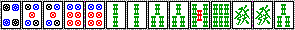

（未完） とつげき東北
最上卓へ行こう：
しすま～メンツには、Ｒ1750～1850くらいのメンバーが多い。
とつげき東北も、彼らとそんなに大きな実力差はないんだが、「Ｒ1850」を境界とする「最上級ランキング卓」の登場で、「会長は最上で打っている」という付加価値ができてラッキーだ(爆)。
とつは最上ではけっこう負けるしたまに不調だと1850切るんだが、まあ「いつでも最上に行ける」という意味で、ちょっと調子に乗ってみたり(；≧∇≦)ﾌﾞﾋｬﾗ!
Ｒ1800前後のしすま～メンツの牌譜を元に、どう打ち方が違うのかを検証し、みんなが最上に来られるように打ち方を改良していこう！
なお、ここでは麻雀講座とかと違って、「とつならこう打つよ」ということだけをひたすら書いていく。
正解は違うかもしれない。
ただし、少なくともこのコーナーの当初の目的「最上卓へ行こう」だけはこの打ち方で可能なのだ( ´ｰ`)y─┛~~
Case１：2000/6/22 牌譜提供者：とつげき関東
東２、全員ほぼ原点の手。ドラ９ピンで親。
ハイパイをぱっと見て、とつは「ピンフ系ができそうか」「ホンイツができそうか」くらいを考える。
たいがいの場合は、第一打の選択はこれだけ充分だと思う。
ピンフ系なら オタ風→浮き牌→ヤクハイ と切るのが手順だし、ホンイツの可能性もあるなら浮き牌から切る。
今回の手はどうか？
ピンフ系＝リーチをかけて２役以上の手ができる で早い形ではない。
ホンイツも割とつらい。
で、とつ第一打は「１ピン」。
１ピンが浮き牌だから。三色がどうこうと言うのではなく。
１２４の形で３を引いた場合にも、そこから１メンツ求めるなら１はいらない。１２４５になったら２メンツになるけれど、どっちにしても「他のメンツと必要牌がかぶるペンチャン」などいらない！ というのがとつの思考なのよ(´-｀)ﾓﾔｰﾝ
関東は 南 から切っている。
この手ではホンイツは見ないのかな？
１ピンの存在は「３ピンを引くこと」を要請する。しかし「３ピンを引く」ことは「南をかぶらせる」ことと難易度がほとんど同じだ。
この手に３ピンが入ってもそんなにうれしくないが、この手に南がかぶったらちょっと希望が見えて来るやんか( ≧∇≦)ﾌﾞﾊﾊﾊ!
次順にいきなり 南 がかぶったのは結果論だけど、中級者には、こういうバラバラの手をバラバラのままクソリーに持っていく人が多い。これはよくない。
おれはバラバラの手だと半分あきらめながら、字牌を残していく方がいいと思っている。
・リーチがかかっても降りやすい
・食い仕掛けできるから、バラバラでも何とか上がれる見込みが出てくる
・ひょっとしてヤクハイとドラがトイツになったりしたらラッキー
・ブラフホンイツができる
からだ。
さてしばらくして（４順目）こうなった。
お！ 字ハイトイツ２組！＝ホンイツヽ( ´ｰ`)ﾉ
関東はここで上家の出した ３ピンをしぶい声で「チィ」している
(#´Д`)ノ
もったいない(ﾉ_･､) いくら親とは言えこの手で４順目から発のみにしてどうする('ρ`) 5800→1500ですわよ(⌒ー⌒；)
仮に４ピンがトイツで、４ピンをポンするならわかる。あわよくばトイトイ、しかも出にくい４、だからね。。
４順目でソーズと字牌がこうなら、ピンズが２３４とあっても７ソウとか引いた時点でメンツ落としするよ(⌒∇⌒)ﾉ"
その後関東は
こうなったところで、東を切ってしまった。（東は１枚切れだった）
この形でもし上がれたとすれば、２ソウって絶対使わないでしょ？
従って万一ダブトンを引いた時のためにも、東は取っておこう。
ダブトン発で7700。ついでに関東は 東 もかぶってた(爆)。
いや、結果はええんよ結果は。
「あるションパイの字牌を引く確率は、１つのペンチャンメンツが完成する確率とだいたい同じ」。
しかもペンチャンを残す必要があるようなハイパイでは、たいがいヤクハイなどがかぶった方がうれしいものだ。
これがポイントでしょうか。
それとホンイツをもっと使おう。
とつ ５月以降上ランのみ集計 200試合 平均順位2.27 上がりにおける一色形の割合11.7％。
ホンイツはブラフにもなる。
バラバラでも10順目くらいまでにチーして、他色をバシバシ切っておいておもむろに「染め色」の１とかを切ってやれば、周りの打牌速度がかなり遅くなるぞ( ≧∇≦)ﾌﾞﾊﾊﾊ!
そしてビビってタンピンのいい形をダマで上がったりしはる( ´ｰ`)ﾌﾟ だから失点期待値も下がります。
リーチされてもオタ風とか抱えていれば降りやすいし。
そして何より、たまたまヤクハイとかがかぶって本物のホンイツになったりするからいい(笑)。
まさかあのハイパイが5200にぃぃぃぃΣ(￣□￣；) ということがたまにあります。
結局相手にとっては、ホンイツが本物であるかブラフであるかがわからないわけで、プレッシャーもかけれる。
いいよこれ(´-｀)b
Case２：2000/6/27 牌譜提供者：み～な
東１で１順目。ドラは北で自分が親です。
何を切りますか？
「ピンフができそうか」ということで言えば、ピンフができるより先にテンパイしそうな感じだなあ(笑)。
第一打は普通に８ピンで良いでしょう。みーなもそう切っています。
こういうトイツ形のメンゼン手の場合、「タンヤオ・リャンメンにな～れ」と念じながら(笑)打ちます。
あるいはドラを頭にするとかね。とにかくリーのみで勝負というのは避けなければいけない。
この場合は親だから、最低「リャンメン」になればいいけど、クズ手をクズ手のまま愚形テンパイにしないことは重要です。
３順目にしていいところを引きました。
当然５マン切り・・・∑(ﾟωﾟﾉ)ﾉ
みーな１ピン切ってるでこれ( ´Д`)('Д｀ )ノ
冷静になったらみ～なでも当然５マンを切るんだろうけど(笑)、この手のミスは避けたいね。
手がバラバラの時はけっこう適当な打ち方でもそれほど問題ない。
というのも、クズ手を最高に効率よく打っても、上がれる確率は結局低いわけだから、「クズ手をうまく打つ技術」は、平均順位にあんまり影響しないのだ。もちろん最高レベルを目指すならその技術もいるだろうが、「最上卓へ行こう」という程度の目的には、そこまで細かい技術は必要ないと思う。
それよりも、自分が上がるチャンスの時、ミスするのはいけない！わけだ。これは平均順位にもろに影響するからね(´-｀)
CASE１の関東の例だねゞ(´▽｀；)
だから、ハイパイがクズ手のときは寝そべって打っていてもいい(笑)
ハイパイでドラが２個あったなら、おれはガバッと起きあがって正座して打つで(爆)
一応、なんで１ピンはだめなの？ に解説をしておきます。
麻雀の打ち方の考え方ですが、
・手が進まない間は、頭は流動的にする
・メンツ候補が割といい形で４つ揃ったら、頭を固定する
というのが効率がいいと思います。
頭はメンツよりも容易にできるので、初めはメンツ優先にするのは当然です。
また、頭待ちになるのは愚形ですから、最後には頭は固定しておく、というわけです。
このみーなの手は、もう「メンツ候補４つ」ができてるよね。
３メンツ完成で４メンツ目も割と簡単できる形だから、
・１ピンを頭に決定する → ５７７（または５５７）から１メンツ作る
・５マンや７マンを頭に決定する → ５５１（または７７１）から１メンツ作る
かの選択ですね。
当然、１ピンを頭にして「５７７（５５７）から１メンツ作る」方がはるかに容易ですね( ´Д`)
だから、１ピン切りはありません。「５７」は両方にリャンメンができるいいカンチャンだ。
で、残る形は ５５７でも５７７ でも、テンパイチャンス自体はほとんど同じ。
ならば、５を切るのが基本です。
この場合はとくに、シャンポンでテンパイもあり得るわけで、５が２枚切れた７７１１待ちが一番ましな待ちになるね。
５５７７ や ５５ １１ のシャンポンはつらいです。
みーなは結局５を頭にして、６９待ちのリーチピンフツモで上がっていましたが、手順的にはちょっと失敗じゃないでしょうか。
ポイント：上がれそうな時は慎重に打とう(ﾟｰﾟ*) ドラが２個あったら正座して打て！(爆)
Case３：2000/6/28 牌譜提供者：み～な
みーなを１戦まるまる観戦しました。今回は打ち方がとつとだいぶ違うかったのでここに載せます。
東１でハイパイ。ドラは１ピンで北家。
第一打は９ピン。これは問題ありません。７や８ピンを引いても、一応６ピンでフォローできるしね。
このハイパイからは
・リーチ発
・発ドラ
・チートイ
・あわよくばホンイツ
なんかを考えていればいいですね。
トイトイも、４トイツあるのでちょっと意識はしますが、５ピンや３ソウをポンするトイトイはちょっと考え物ですな。。
先に他のヤクハイを引いたらトイトイやホンイツも狙いつつ、ヤクハイのみも狙いつつ、です。

７順目にしてこうなりました。
西家が西をポンしている他は異常なしです。
みーなは５ソウを落としました。うまいね( ´Д`)。チートイの可能性も残しつつ・・・ということやね( ´ｰ`)y─┛~~
おれなら発切ってしまってるな( ≧∇≦)ﾌﾞﾊﾊﾊ!
このきれいな形をチートイでは上がりたくない(笑) そして発のみとかリーのみになる恐れがあるからね。
発を切っておけば、どう転んでもリーチ・タンヤオとかタンヤオイーペーが狙えるので。。
でもこれはどっちでもそんなに問題ないかと思います。
直後に最高の所を引いた。リーチ！･･･(´ﾛ｀)あれえええ･･･ダマぁ！？
２ソウも発も出てないし、他家が危なさそうなわけでもないのに(･ε･)
見ての通り、５ソウも事前に切っており、２ソウはヒッカケかつ、３ソウ３枚で「降りなければ振る」状況です。
平場でこういう手ならぜひリーチしたい。
特にダマで２６００の上がりは損だああ(#´Д`)
リーチかけたら２倍になる上、ツモったら７７００になるから。
一方、ピンフ系はリーチにイマイチメリットがない。１０００点のピンフのみリーチはどう転んでも安いし、２０００点ピンフ系からリーチしてツモっても５２００にしかならないのよね。。。
ダマでリャンメン待ち２６００手は、ほとんど必ずリーチしてます私(；´ｰ`)y─┛~~
この手の場合、２ソウが出たらリーチイーペーで2600だけど、一発や裏も充分期待でき、しかもそれで得点が倍になるというメリットはでかいよ。
単純なことを言えば、リーチしても上がれる確率があまり減らないなら、リーチした方が得だ ヽ( ´ｰ`)ﾉ ということかな。
上ランならこの ２ソウ・発は 一瞬で出てくるでしょう。
では次に東２のこの場面。
とりあえず出上がり不可能なテンパイになりました。
ここでは４ピン切りでいいです。
トイメンは基本的にホンイツと見ておこう。この時点でトイメンのホンイツに気付いていなければ最上は遠いです(笑) （もちろん、ヤクハイのみとか、トイトイの可能性だってありますが、とにかく染め手も警戒しておかなければダメですね）
まだ、ここでリーチはかけません。ドラを引いたらラッキー、４ソウを引いても３面待ちに変わります。。
しばらくしてこう（１０順目くらい）。トイメンはこの直前に発もポンして、西・発ホンイツくさい感じですが、マンズはまだ出ておらず、手出しで白を出したところです。
１ソウ切ってリーチ！･･･またダマかい(#´Д`)嫌がらせか？(爆)
ウワサのリャンメン２６００手ですなこれ( ´ｰ`)y─┛~~ まあ変則待ちですが、３ソウも４ソウもまだ出ていません。
出上がりできない形でテンパイした。選択は３つです。
・リーチする
・より良い形になるのを待つ（またはツモ上がり）
・上がりを諦める
基本的に、よっぽど危ない状況でなければ、リャンメンとか待ちが良くて2600ならリーチします。
1300の時はより良い形になるまで待つか、上がりを諦めるかすることが多いです。
親は、２鳴き直後にやっと手出しで白を出したところです。普通、この程度なら１シャンテンくらいと見ていいと思います。
もちろん発ドラドラなんかもあり得ますが、まあドラ引いても上がりなのでそれほど怖くないかと。
ていうかドラ引けばマンガンですわ( ≧∇≦)ﾌﾞﾊﾊﾊ!
染め手に対しては、相手がまだテンパイしていない段階では、染め色以外で待つほうがいいですね。
相手が当たり牌引いたら相手は終わりです。
「降りなければ振る」ような状態に持ち込むとかなり心強いです。こういうリーチならぜひしましょう。
そもそもこの手は 「よりよい形」にならない手なので、リーチをかけない＝上がりを諦める と言ってもいいほどです。
ちなみにここでは、ダマで回していると下家からリーチがかかり、みーなは降りました。
トイメンから４ソウが出ていましたねぇ(笑)
しかし、安め2600高め5200（裏のればもっと）のリャンメンで上がらなくていつ上がるねんっ( ≧∇≦)ノということです(笑)
ついでに東３にて。みーなは西家で、ドラがなんと西という境遇。９順目で
このような(ﾟｰﾟ*)｡･:*:･ﾎﾟﾜｧｧﾝとした形。ドラはまだ出ておらず、西ドラ３のチャソスです。白は場に切れています。
ここからみーなは３ソウを切っていましたが、マンガン手で手を狭めるようなことはしないほうがよろしい。
７ピンなどが出てもポンして片上がりに賭けます。(少なくとも上ランレベルなら、西は充分出ます)
例えばほら、東１でマンガン手でテンパイしていてリーチされた。普通、マンガン手なら勝負！ でしょう？
「テンパイすれば勝負していい」ほどの手なら、全力でテンパイを目指すべきです。
西は、トイツにして使わない限り使えず、「降りない限り出る牌」です。
３つの例とも「降りない限り振ってしまう」形のお話でした(笑)
こういうリーチは非常に有効です(￣ー￣)
３面待ちがなぜ有効かということと似てますな。「降りなければ（かなりの確率で）振ってしまう」ということで。
Case４：2000/7/2 牌譜提供者：み～な
東１の第一ツモ。ドラは４マンで西家。
みーなは第一打で９ピンを切った。
( ё_ё)ノはいそこ！
ちゃんと牌の構成を見よう。
確かに １３４ のような形では、メンツを求める場合に１が使われないことが多い。
だけど例えば １３４６８ だったら、２を引いた時に４６８がリャンカンになる。
だから、単独に３枚だけを見て ６８９ → ９切り と考えるとまずい。
とつの第一打は、親が１打目に西を切ったこともあって西かな。
この手は「ピンフ系」のいい形で、頭より先にメンツができてもおかしくない手だねぇ。
だから頭を作ることを考えて、西は不要かなと思うから。
で、ここで９ピン切りがなぜだめかと言うと、６８９は７を引いた時に頭候補が６９の２つ求められるからだ。
最悪、頭ができないうちにテンパイしても、１ピン単騎より６９ピンノベタンのほうがいいね。
１ピンを取っておく意味はよくわからないしね(笑)
他の４メンツがペンチャンよりましな形になったら、浮いた １ ９ はメンツ候補としては全く不要になる。
頭の位置の決め方というか、頭をどう作っていくかについては、よく考えて打たないとまずいこと（クソ頭待ちとか）になるよ～。
６８９ から ９を切ってしまっていると、最後頭待ちになって、やっと６を引いて６６７８になったのにフリテン、てことになるからね(笑)。
頭の作り方心得
・まだツモ順目がたくさんあり、メンツもどこにどうできるかわからない間は、頭を決めてしまわないように。コウツになったりしてメンツとして使えるようにもなるし、頭はすぐできる。
・とくに早い段階（他のメンツ候補が未完成の場合）では、頭を真ん中の牌に決めてしまうと大変なことになる。７を頭に決めてしまったために、捨て牌に６８・・と並び、あげくに引きずられて５３・・・とムダになったりする(笑) で、結局シャンポンでテンパイとか(爆)
・メンツ候補がきれいな形で決まったら、頭を決めてもいい。特に、１１なんかが頭候補の場合、どうせ２とか引いてもメンツ候補としても不十分だからだ。「頭は端に寄せる」というのが基本で、これはメンツ作りのためにも重要だ。
ところでこの局、またみ～なは２６００ダマで上がっていました(⌒∇⌒#)
ここでなんと８ピンを残してソウズ切り。
上家がホンイツかもしれないのは確かだが、ホンイツやる気ある時、４順目にションパイの白切るかあ？(笑)
ホンイツ手（またはその兆候）がある時は、字牌の出方を見て、３９００なのか５２００なのかそれ以上なのか、をちゃんと考えよう。
ここは８ピン切ってリーチ！ です。
ダマで張った時は、ちゃんと「手替わりの可能性があるか？」をよく見ること(ﾟｰﾟ*)
この形ならピンフになるとかだけど、２５・４７ソウもけっこう出ていて、それら待ちに変わってもあんまり嬉しくない。
またマンズ部分でピンフになったらイーペーコーが消えるので意味ない。
手替わりの可能性もなく、ダマなら２６００で、かつまずまずの待ちであれば、だいたいの場合でリーチする価値がありますよー
Case５：2000/7/6 牌譜提供者：とつげき東北
勉強の息抜きにクソキャラで打っております。データ合わせでＨＮはと⊃げき東北ですが・・・
こ～んな詐欺ハイパイですが何を狙うかな？
ぱっと見て
・ホンイツ
・トイトイ（チートイ）
・ヤクハイ
などが思いつき、組み合わせれば大きな手が簡単にできそうだね。
しかし！ とつはこの時点で基本的には「ヤクヤクドラドラ」を狙いの中心に定めます。
麻雀講座に書いたように、そしてデータに出ている通り、「平場で上がりにくくしてまでマンガンをハネマンにのばしてはいけない」からです( ＇∇＇)。東南戦になればまた別としても、東風戦では基本的に「一番早くできるマンガン手」が常に最高手です。
例えばこの手で、親の第一打の南をポンし、さらにヤクハイをポン、すると、他家はかなり警戒するでしょう。
そこから５６マンを落としていこうものなら、なかなか上がりづらくなります。
ヤクハイをポンし、５ピンあたりにひっつけてメンツにし、あっ と思った時にはヤクヤクドラドラ７７００くらいで上がってしまう、というのが理想的です。
仮にホンイツになるにしても、８９ピンなんかが来たらサクサク先切りしてしまうようにして、上がりやすくしておきます。
そこでとりあえずは打西。発も恐らく使わないだろうけど、ここではチートイもあることだし。。
直後に出た東をポンして、その後しばらくしてこうなった。
もしこうなる以前に、別の字牌やドラが出た場合はポンします。そして５ピンを切っていく。
例えば 東・白 とポンしていて、更に５ピンなんかをポンしたのでは、２ピンや南が出るのが期待しにくいです。
あるいは、ドラとヤクハイをポンしてホンイツのニオイまでしてたら、誰も字牌など切ってくれなくなる。
もちろん、マンズがいい形だからですよゞ(´▽｀；) マンズが３５とかなら、そっちを切っていくでしょう。
変に技巧に走ってるわけではなく、同じ「マンガン以上」なら、速くテンパイし、また警戒されにくい役の方が有利ということです。
最終的には、親の喰い仕掛けもあって、割と上がりにくい形のテンパイになったんだが、捨て牌に ４５６マンが並んでいるよりはずっと上がりやすいはず。
ホンイツやトイトイをつけていたら、親のチンイツが先にテンパイしてたかもねヽ( ´ｰ`)ﾉ
ところで「チートイ１シャンテンから他の役へ移行する」ことの是非ですが。
見えていない牌が１００枚ある状況で、１枚も使われないトイツ候補３つでチートイ１シャンテンからチートイテンパイを目指す場合、テンパイする確率は、７回ツモった状態で約50％です。同様に１２順では70％。
（これは相手が牌を使用しない（アンコとかにしない）場合であって、実際のゲーム中には中盤～終盤で「１枚も使われない牌」というのを特定し、かつそれを持つことはほとんど不可能で、従ってテンパイ速度はもう少し落ちるでしょう）
特定の１つのリャンメンターツがシュンツになる確率とだいたい同じです。
基本的には、チートイをしなくても上がれる形であれば、チートイは目指さない方が無難と考えてます。
引き合いになった場合に喰って回したりできず、ギャンブル性が非常に大きくなることなども理由の一つです。
チートイのメリットは、「つかめば出る」牌が（残り１枚のオタ風など）わかっており、かつ既に場が充分見えているためにその牌が残りわずかの山の中に眠っている確率が高いと予想でき、それで待つことができる、場合に最大となります。
例えば残りツモ10順のうちに「つかめば出る牌」が出る確率は４５％もあるからです。通常のリャンメン待ちなどなら、つかんでも降りやすく、そればかりか降りなくてもメンツに使いやすく、こうはいきません。
早い順目のチートイは色々な意味で損でしょう。順目が速く、またテンパイに対する必要牌が充分に大きい間は、３シャンテンであろうと、チートイ１シャンテンと手の進み方はあまり変わらないです。
このハイパイなら、７順くらいでチートイ以外でテンパイできる確率が５０％くらいはあると思いますよ・・・。ドラ引いても使えるし。
Column1：やっていること、やっていないこと：2000/7/14
え～麻雀のプチ評論家たちは色々言いますわな(笑)。データなしで迷彩がどうとか、裏スジがどうとか(笑)。
で、まあ取りあえずおれのレベルならどうしてるか、てことを書いておきますわ。
おれが「やっていること」と「やっていないこと」ね。
やっていないこと
・ひとつひとつの牌がツモ切りかどうかをチェックする
覚えるのめんどいから。ただし、染め手に対して、とか、オーラスでこいつには振りたくない・・・という時とかは、チェックします。
・ダマを警戒する
ドラが出ていないならともかく、そうでない場合は誰がダマテンしているか、とかあまり気にしてません。オーラスのトップの人とかに対しては警戒しますが。もちろん、流局まぎわになったら、なるべく通っている牌を切るようにはしていますよ。
・迷彩を作る
あんまり細かい迷彩は作りません。とくに染め手や喰い仕掛けの場合は。ヒッカケになるリーチにしても、１順待ってから・・・とかそういう工夫はあまりせず、むしろ素でカンチャンリーチして、後ヒッカケになる方が良いと思います。
・待ち牌を細かく絞る
リーチとかに対して、「これが当たりだ！」というのは考えません。なぜなら、偶然以上にはあまり当たらないオカルトの類だからです。
やっていること
・ドラがどこにあるか推測する
場にドラがあまり出ていない時に、だいたい誰が持っているかを、推測しておく。
具体的には、ドラソバを何個も落としているような人はドラをトイツにしていたりするし、染め手でもないのに早い喰い仕掛けをしている人もあやしい。判断はその程度。それ以上は「読ま」ない。
・喰い仕掛けを警戒する
ヤクハイポン、さらにチー、とか入ったら、回し体勢に入ります。具体的には、「マンズの上の方とピンズの下の方が危険」とか「染め手の可能性は？ ドラの可能性は？ 他のヤクハイの可能性は？」とか、それくらいのレベルで判断し、自分の手の良さに応じて回したり無視したり降りたりします。
・危険牌先切りする
自分の手が大きい場合でなければ、１０順目くらいまでにメンツの位置をある程度定め、浮き牌を切っておきます。手が全然できず、バラバラであってもそうします。
・（特に序順で）頭の位置を意識する
これはスピードを上げるために必要だと思うんだが、とにかく頭がどうできるか、をちゃんと考えて打牌を選んでいます。例えば、３３とかトイツがあっても、３はメンツ候補としても使いやすいので、他の頭候補も考えます。こういう場合は７８８とかから８を先切りしません。逆に１１とかがあれば、他はメンツ候補重視にする、とかです。
・ハイパイ時に、どの点数を狙えばよいか、そのためにどんな役が作れるかを確認する
「ヤクハイは１枚切れたら合わせ打ち」とかそういう「基本」で打つのではなくて、ここではリーチをかけて高い手を上がる必要があるのか、のみ手で良いのか、ムリに染め手でマンガンにしなければならないのか、などを考えます。
・迷彩を作る(笑)
あれ、これ「やっていないこと」ちゃうかったっけ(爆)。これは迷彩というか、リーチのかけ方なんですが。いや、ある程度高い手ならなりふり構わずソバテンでも良いんだが、手が高くない（または、ならないと予想される）場合などは、序順に２２３から２を切っておいて、うまくいけばここで１４待ちになるようにします。
あと、ニセホンイツ（全然ホンイツにならないのにホンイツっぽく捨てる）はよくやります。
・降り方の工夫
「振りさえしなければ良い状況」なのか、「上がらないと少しつらい状況」なのか、「降りていられない状況」なのかを考え、それぞれ「完全ベタオリ」「まわし打ち」「ツッパ」します。
まわし打ちとは、「この部分は安全だが、切ったらほとんど上がれなくなるなぁ」って場所は切らないということです。その時に「ここなら１回だけ片スジを勝負するだけでテンパイになる」「上がりは遠いがここのトイツはスジで安全っぽい」など、自分の手の良さとかを考慮してどうするか判断します。
・待ち牌を絞る
待ち牌を絞らない、と言っても、全然しぼらないわけではなくて。リーチに対しては基本的に「現物以外危険！」「スジとかはけっこう安全（点数的にもピンフがつかない）」「序順の切り牌の外側はわりと安全」と考えます。即ヒッカケが怖い、とか、そういうのはあまり考えません。
一方、食い仕掛けには割と待ち牌を予測しながら打ってますねぇ。単純に食い仕掛けを含めてとにかく上がりに向かう場合、やはりポン材の有効性の関係で、最後の方でどうしても「ソバテン現象」が起きるし、序順に捨ててある牌の近辺は割と安全（だってその近くがあれば、ポンやチーのために残すもんね）。
Case６：2000/8/14 牌譜提供者：み～な
一人が一人に振りまくり、東３を迎えた局面ですねぇ。
手はまずまず。とりあえずピンフ系で上がれそうかな。裏に期待してでもぜひ３９００以上が欲しいが、とにかくリーチをかけたいところ。一発もあるし、直って２位でオーラスを迎えることもできる。
３順目にこうなった。ここでみーなは８ソウを切ってしまうが・・・。
ここは１ソウ切りで。６８マンが不充分な形だし、まだ３順目だからね。
仮にここでリーチかけられても、１ソウも８ソウもそんなに危険度は変わりません。
嫌な形でテンパイしました。裏１乗っても２位に届かず。
そこでこの形なら、タンヤオへの変化もあると見て、おれなら１マン切りとするでしょう。
みーなは８マンを切りましたが、変化するには３マンを引かねばならず、タンヤオ変化の３６ピンより効率が悪いね（^-^；）。

結局３マン引きの難しさに耐えかねて(笑)、イッツーの方向へ進んだみ～な( ≧∇≦)ﾌﾞﾊﾊﾊ!
で、リーチがかかってきました。何を切る？(ﾟｰﾟ*)｡･:*:･ﾎﾟﾜｧｧﾝ
(ﾟｰﾟ*)｡･:*:･ﾎﾟﾜｧｧﾝ
(ﾟｰﾟ*)｡･:*:･ﾎﾟﾜｧｧﾝ
(ﾟｰﾟ*)｡･:*:･ﾎﾟﾜｧｧﾝ
はっ ちょっとぽわーんとしすぎた。。
えーもちろん、打１マンで決まりですね( ≧∇≦)ｂ
Σ(´ﾛ｀)み～な４ピン切っとるぅぅ
これはひどいよ（＃´Д`) (笑)
２位になれるかもしれない手をミスミス崩し、３位を確定しているようなもんです。どうせ振っても３位、降りてもまず３位なので、ここでは「守る」ことによって順位期待値が良くなるどころか大幅に下がります。
結局は流局したのだが、テンパイのために危険牌をけっこう切ってたね。
振らなかったのは結果論だが、結果論で言うなら、もし上がりに向かってたらリーチイッツー上がってたよ( ´Д`)
さて次の局。

発のみでテンパイしているところに、また２位からリーチ。さっきと似た状況やね。
ここでみーなは２３ソウを落としているが、ここは１マン切って全ツッパです。１ソウは現物なのでまだ出やすいし。
結局発ホンイツで張り直したが、リーチ者がマンガンツモり上がりました。
ここから白をポンしてホンイツ、という気ならまだわからないではないが、他ならぬ下家のリーチ、ここは上がれる可能性を最大限にすべきだ。これが例えば上家のリーチで、２３ソウが切っていけるなら、白発ホンイツに持っていくだろう・・・。
この２局を見て、みーなに「気の迷いで降りてもうたん？」と聞いたら、ぜんぜんそうじゃない様子(笑)。
どうやら、ここで降りる方が勝つ確率が高いと思っているようだが、全然ちゃうぞお(笑)
「振っても降りても最終順位はほとんど一緒」なら、攻めないと損に決まってる。
特にこの場合、もう東３で、横並びの２位争いの相手のリーチだから、ほとんどここが「オーラス」と言っても良い。
さっきの局も同じ。
もし相手の手が大きければ、どうせ誰から上がっても２位は持って行かれる。自分が振るのと同じ事。
もし相手の手が小さいならば、自分が振ってもそんなに状況は変わらない。
つまり振ることによって悪くなる順位期待値がほとんど０で、逆に攻めることによって順位期待値は良くなる。
「振っても問題ない」状況では、絶対攻めろ！！
仮にこれがトイメンや上家のリーチなら、降りたりもするねんよ。相手を見て、そいつが上がるとどうなのか、という順位期待値的観点を大事にしましょうということ。
降りて次の局に期待、というのは、せいぜい４分の１しか成功しないということをお忘れなく。降りて特定の相手が振ることによって有利になる場合はともかくね。その上、今回もしサクッと上がられたら、次回は今回の彼以上の手を作らねばならず、かなり困難になるわけ。
そして下の画面は別の対戦のやつだが。

もう東３で、まずまずのトップ。ここでまあ、点差の離れたトイメンからリーチね。
さっき降りたはずのみーなは、ここでは９ピンを切ってる( ´Д`) まあ、本人もこれは「ミス」とわかっていたが。
ここはダブトン中とか上がっている場合ではない。
トイメンが上がってくれれば、オーラスをまずまず２位と離れたトップで迎えられるのだ。
つまり「振らなければ良い」ということ。
アンパイが１つしかなく、攻めても降りてもほとんど同じ、というならともかく、６７８マンは通るだろうし、安心して降りるべき局面だ。
さっきの例とは逆で、「攻める」ことによって順位期待値はほとんど良くならず、危険なだけ損なのね。
「上がっても意味ない」状況では、絶対降りろ！！
これが、トイメンが３４０００点とかならまた話は別。いい形なのに、ミスミス１位をただでくれてやることはない。
点数状況に応じた的確な攻め・降りをすれば、同じ放銃率・和了率でも、平均順位はぐっと良くなります(-_★)

これはおれの牌譜だが。ムチャクチャなリーチですね(*/∇＼*)
でも、これでええねんよ～
この局に下家が上がって東３になると、もう絶望的。「マンガン直で逆転できる相手」がトイメンのみになると、相当シビア。
故に、降りるわけにはいかない。どうせ降りないし手替わりもあまり望めないなら、リーチした方が得だな。
９マンをツモって中ヒッカケになることを祈りつつリーチ。
結果、下家から出てマンガンでした。ちなみにこの試合、結局トップ取れたよ(ﾟｰﾟ*)｡･:*:･ﾎﾟﾜｧｧﾝ
Column2：とつの実力アップステップ：2000/9/16
Ｒ1700までは簡単、だと思う。全く何も考えず「慣れ」だけでひたすら打ってれば、Ｒ1700くらいになるのでは？
特によく言われるのが「Ｒ1800以上になると、なかなかＲが上げられない」というヤツ。
「頻繁に出会う状況への対処技術」を身に付けることで、Ｒは一気に上昇する。
例えば「オリ」を覚える。１試合のうち３局くらいは「降り」ているのが普通であり、これを覚えるとモロに平均順位に影響する。
また「メンツ作りの効率化」も重要で、降りほどではないがかなり平均順位に影響を与えるだろう。
他に「点数状況の把握」も平均順位を大きく左右する。
これら「３大技術」を、かなり最高レベルまで高めると、ちょうどＲ1800くらいになると思われる。
これ以上は、もっと地味な技術をコツコツ覚えていくことが重要になるように思う。
とつが東風を始めたころ、1999年の４月の段階では、おれの安定Ｒはワイワイ卓でＲ1700くらいだった。
誤打も多いがメンツを作れ、リーチには一応スジを切ったり時にはベタオリするレベル。
どういう時にホンイツをやればいいか、とかはよくわかっていない。
その後知り合いなんかとずっと打って、安定Ｒが1750くらいになった。
このころは「とにかくスピード上がり＆ベタオリ」の打ち方をしていた。
点数状況をある程度考えて打つようになったのもこのころ。
しかし安上がりはイマイチ有効ではないことに気付き、防御を堅くしながらピンフ系リーチ手で攻めるようにしてＲ1800。
このころから上ランに行くようになる。
ホンイツの染め方なんかもなかなかうまくなってきたころ。
ちょうど、「麻雀講座 初級編」通りの打ち方、て感じかなあ。
ここからがなかなかレベルが上がらなかった(笑)。
とにかく先制リーチ＆ベタオリをしているのだから、負けるはずがない！ と思っているのに、どうしてもＲ1850とかが限界なん(笑)。
しばらくＲの上がらない生活を続ける。
しかし慣れたもので、その打ち方でも細かいメンツ作りの効率化とか、相手の染め手への対処法などの工夫でジリジリＲが上がる。
安定Ｒが1850くらいかなあ。
その後、リーチのかけかた、ダマにする場合、ムリな食い仕掛けの禁止、などの工夫（麻雀集中講座に書いた内容のやつね）で、かなりＲが上がった。安定1900を超えたのがこのあたり。
それから、意味ない安上がりを避けること（具体的には、リーのみ・ピンフのみテンパイを意地でも避けること！）、ヤクハイを絞る度合いの工夫、メンツ作り方針の一新で、今の実力になったと思われる。